سمارت تكنولوجي — نظام إدارة العملاء · دليل المبيعات4
1
تسجيل الدخول
خطوة 1 من 2
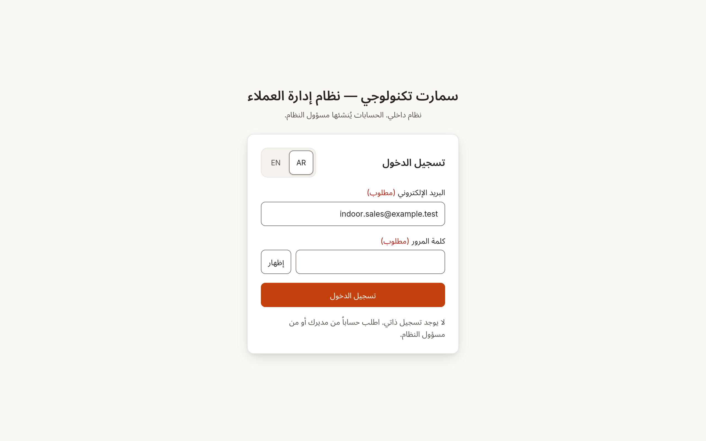
1. افتح رابط النظام. اكتب إيميلك في خانة البريد الإلكتروني وكلمة السر، وبعدين دوس على تسجيل الدخول. لو عايز تغيّر اللغة دوس AR أو EN فوق.
⚠ لو حصل كده
مفيش «إنشاء حساب»: الحساب بتعمله الإدارة.
سمارت تكنولوجي — نظام إدارة العملاء · دليل المبيعات5
1
تسجيل الدخول
خطوة 2 من 2
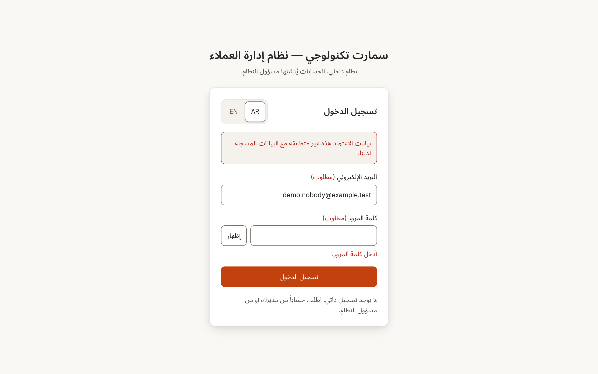
2. لو الإيميل أو كلمة السر غلط هيظهرلك المربع الأحمر ده. راجع الكتابة وجرّب تاني بهدوء.
⚠ لو حصل كده
إيميل أو باسورد غلط: بيانات الاعتماد هذه غير متطابقة مع البيانات المسجلة لدينا.
بعد ٥ محاولات غلط ورا بعض: تم قفل هذا الحساب بعد عدد كبير من محاولات الدخول الفاشلة. يرجى مراجعة الإدارة. — كلّم الإدارة، وماتفضلش تجرّب.
لو سبت السيستم ٨ ساعات من غير شغل هيطلّعك، وممكن تشوف: انتهت صلاحية جلستك. يرجى تسجيل الدخول من جديد. — ادخل تاني عادي.
سمارت تكنولوجي — نظام إدارة العملاء · دليل المبيعات6
2
جولة في القائمة الجانبية
خطوة 1 من 1
1. القائمة دي هي طريقك لكل حاجة: العملاء، عروض المورّدين، الطلبات / الصفقات، عروض الأسعار، أوامر الشراء، التقارير. بعد الدخول هتلاقي نفسك في العملاء. فوق هتلاقي اسمك، وزرار اللغة، وتسجيل الخروج.
⚠ لو حصل كده
لو مش لاقي شاشة في القائمة، يبقى دورك مالوش صلاحية عليها (شوف الدرس ١٤).
سمارت تكنولوجي — نظام إدارة العملاء · دليل المبيعات7
3
عميل جديد
خطوة 1 من 2
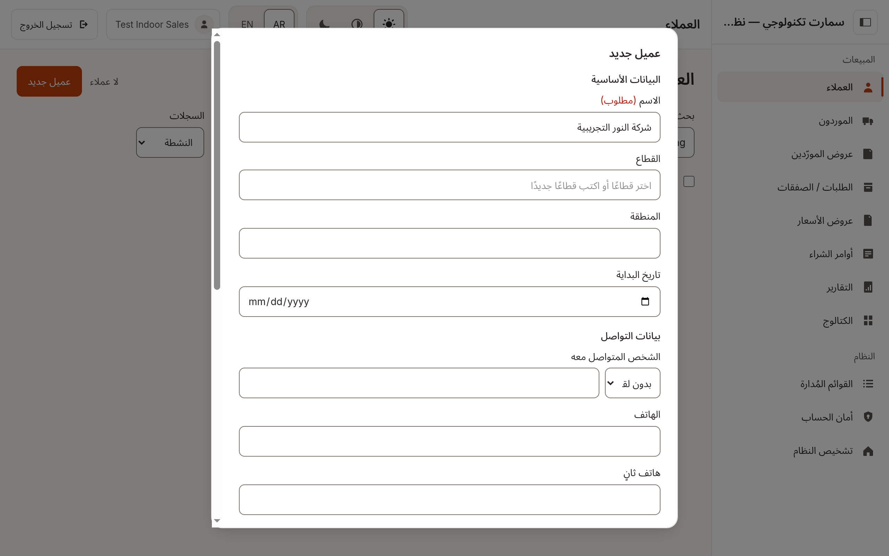
1. من العملاء دوس على عميل جديد. اكتب الاسم (ده الحقل الوحيد المطلوب) وكمّل الباقي لو معاك، وبعدين دوس حفظ.
⚠ لو حصل كده
حالة العميل مش بتتكتب بإيدك: السيستم بيحسبها من صفقاته.
سمارت تكنولوجي — نظام إدارة العملاء · دليل المبيعات8
3
عميل جديد
خطوة 2 من 2
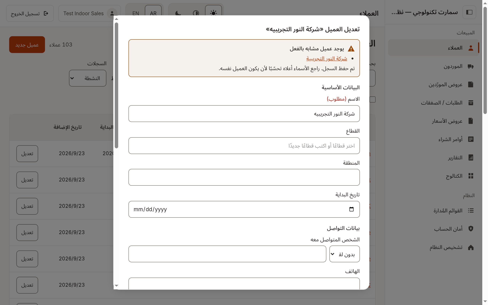
2. لو فيه عميل اسمه قريب، هيظهرلك التنبيه ده فوق الفورم. العميل اتحفظ خلاص، بس دوس على الاسم اللي في التنبيه واتأكد إنه مش نفس العميل.
⚠ لو حصل كده
التنبيه: يوجد عميل مشابه بالفعل وتم حفظ السجل. راجع الأسماء أعلاه تحسّبًا لأن يكون العميل نفسه.
لو طلع فعلاً نفس العميل، بلّغ مديرك. ماتعملش عميل تالت.
سمارت تكنولوجي — نظام إدارة العملاء · دليل المبيعات9
4
طلب جديد (صفقة DL)
خطوة 1 من 2
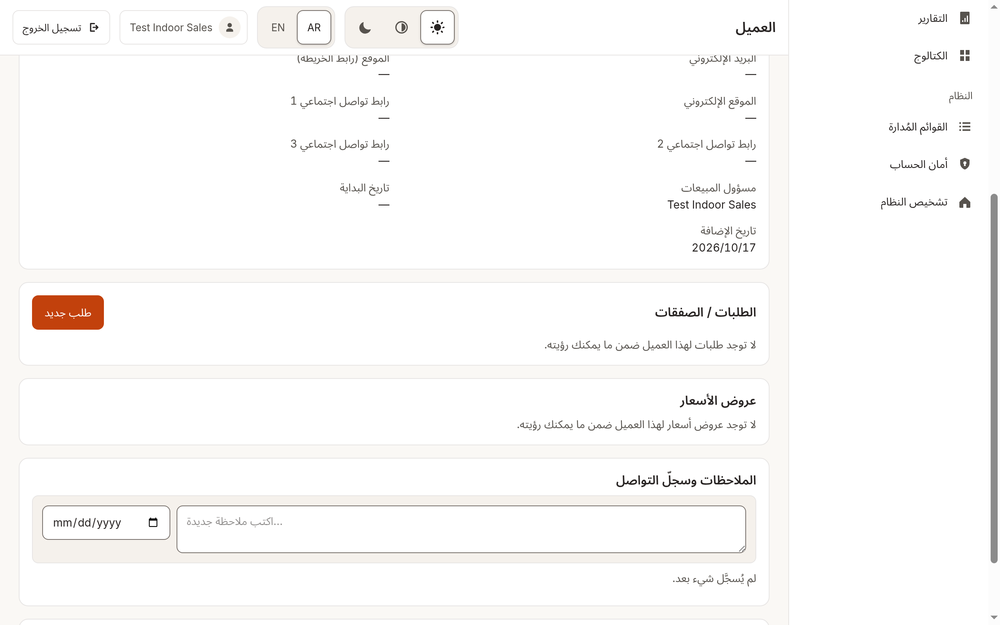
1. افتح صفحة العميل وانزل لـ الطلبات / الصفقات، ودوس طلب جديد. (وممكن كمان من شاشة الطلبات / الصفقات بزرار صفقة جديدة.)
⚠ لو حصل كده
العميل ممكن يبقى عنده كذا صفقة مفتوحة في نفس الوقت، عادي.
سمارت تكنولوجي — نظام إدارة العملاء · دليل المبيعات10
4
طلب جديد (صفقة DL)
خطوة 2 من 2
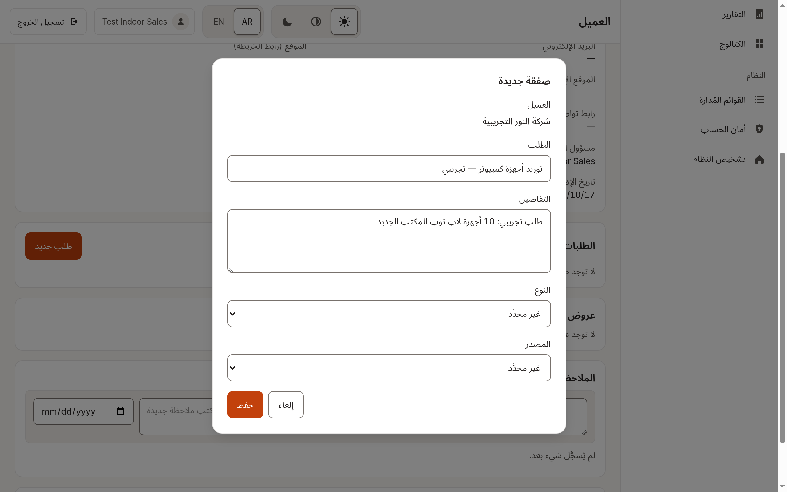
2. العميل بيبقى متحدد خلاص. اكتب الطلب والتفاصيل، واختار النوع والمصدر لو تعرفهم، ودوس حفظ. هتفتحلك صفحة الصفقة برقم DL.
⚠ لو حصل كده
الطلب اللي بتعمله بيظهر «بانتظار الاعتماد» لحد ما المدير يعتمده.
حالة الصفقة بتتحرك لوحدها مع عرض السعر ورد العميل. بإيدك بس بعد ما تكسبها (الدرس ١٠).
سمارت تكنولوجي — نظام إدارة العملاء · دليل المبيعات11
5
عرض المورّد (SQ)
خطوة 1 من 7
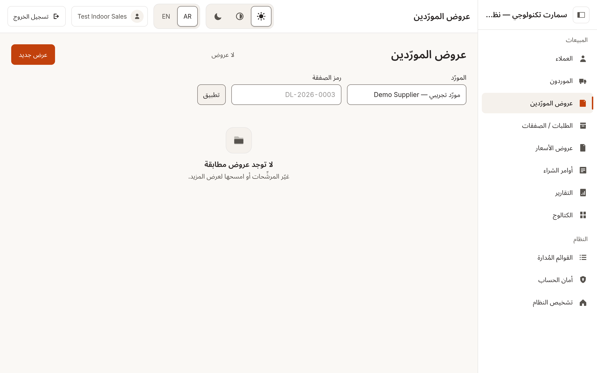
1. من عروض المورّدين دوس على عرض جديد.
سمارت تكنولوجي — نظام إدارة العملاء · دليل المبيعات12
5
عرض المورّد (SQ)
خطوة 2 من 7
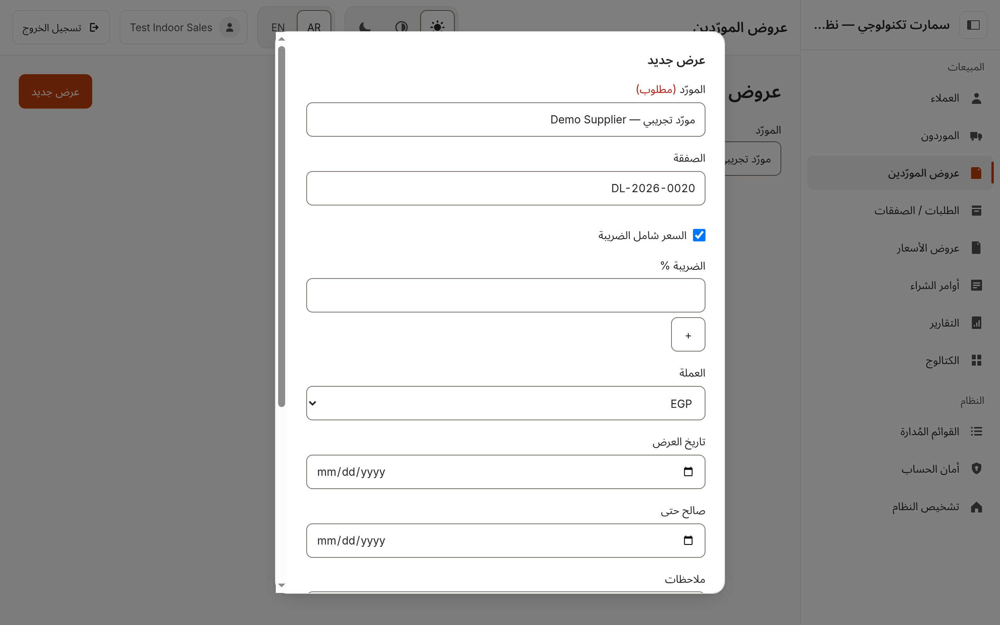
2. اختار المورّد، واربطه بالصفقة (اكتب رقم DL)، واختار العملة. لو أسعار المورّد شاملة الضريبة علّم على السعر شامل الضريبة.
⚠ لو حصل كده
العرض ممكن يتسجّل من غير صفقة، بس ربطه بالصفقة بيسهّل عرض السعر بعدين.
سمارت تكنولوجي — نظام إدارة العملاء · دليل المبيعات13
5
عرض المورّد (SQ)
خطوة 3 من 7
3. دوس إضافة بند، واكتب اسم المنتج أو اختاره من الكتالوج، وسعر الوحدة والكمية. كرّر لكل بند.
سمارت تكنولوجي — نظام إدارة العملاء · دليل المبيعات14
5
عرض المورّد (SQ)
خطوة 4 من 7
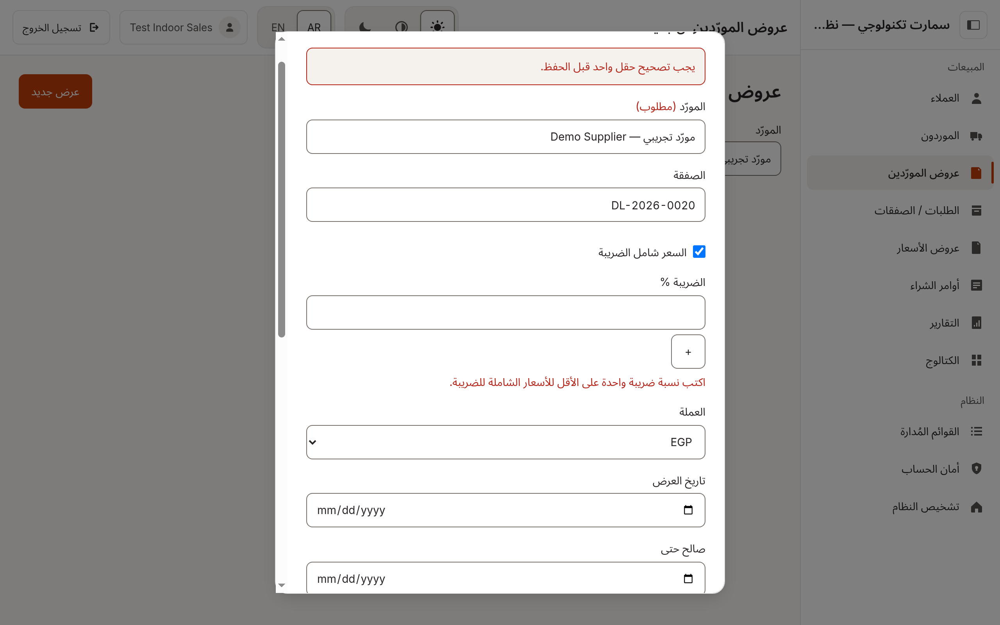
4. لو علّمت «السعر شامل الضريبة» لازم تكتب نسبة الضريبة. لو نسيتها ودوست حفظ، هتلاقي الخانة دي حمرا.
⚠ لو حصل كده
الرسالة: اكتب نسبة ضريبة واحدة على الأقل للأسعار الشاملة للضريبة.
ممكن تضيف أكتر من نسبة بزرار «+».
سمارت تكنولوجي — نظام إدارة العملاء · دليل المبيعات15
5
عرض المورّد (SQ)
خطوة 5 من 7
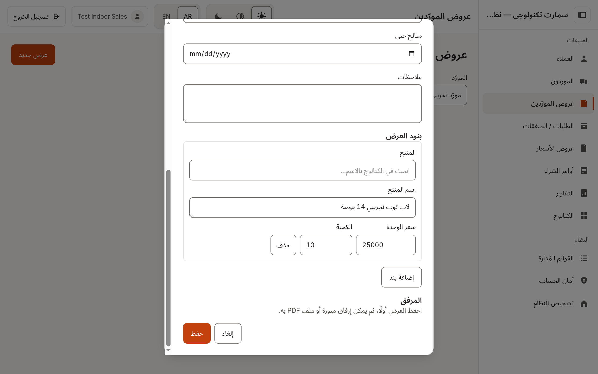
5. المرفق (صورة أو PDF العرض) مش بيتضاف قبل الحفظ. دوس حفظ الأول.
⚠ لو حصل كده
هتشوف: احفظ العرض أولًا، ثم يمكن إرفاق صورة أو ملف PDF به.
سمارت تكنولوجي — نظام إدارة العملاء · دليل المبيعات16
5
عرض المورّد (SQ)
خطوة 6 من 7
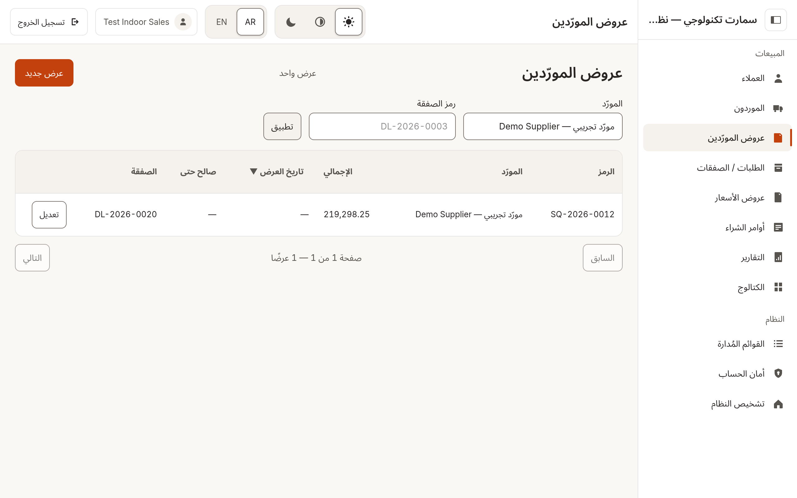
6. العرض اتحفظ وخد رقم SQ. عشان ترفق الملف دوس على «تعديل» في صفه.
سمارت تكنولوجي — نظام إدارة العملاء · دليل المبيعات17
5
عرض المورّد (SQ)
خطوة 7 من 7
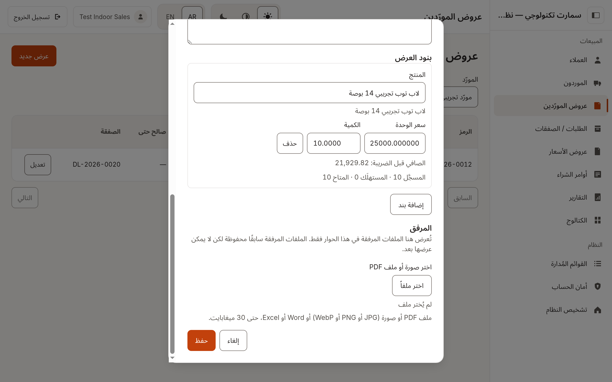
7. دلوقتي ظهر زرار اختر ملفاً. اختار الملف وهيترفع لوحده.
⚠ لو حصل كده
الملفات المسموحة: ملف PDF أو صورة (JPG أو PNG أو WebP) أو Word أو Excel، حتى 30 ميغابايت.
سمارت تكنولوجي — نظام إدارة العملاء · دليل المبيعات18
6
عرض السعر (QT)
خطوة 1 من 8
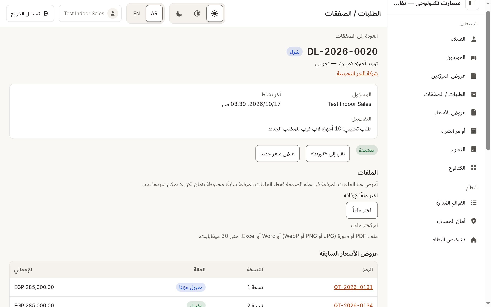
1. من صفحة الصفقة دوس على عرض سعر جديد.
سمارت تكنولوجي — نظام إدارة العملاء · دليل المبيعات19
6
عرض السعر (QT)
خطوة 2 من 8
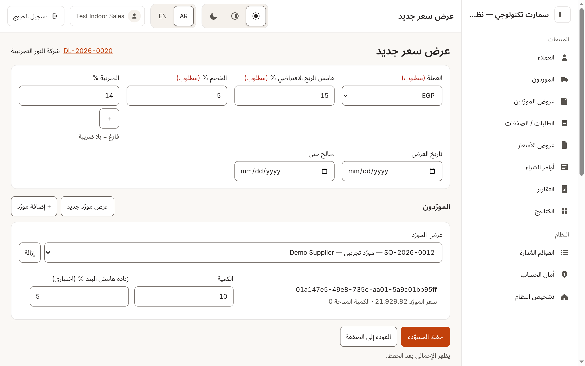
2. اختار العملة، واكتب هامش الربح الافتراضي % والخصم %، والضريبة لو فيه. الخصم بيتخصم قبل الضريبة.
⚠ لو حصل كده
سعر الصرف بيتثبّت لحظة إنشاء العرض، وأي تغيير بعد كده مايأثرش عليه.
سيب خانة الضريبة فاضية = من غير ضريبة (ومفيش سطر ضريبة في الـPDF).
سمارت تكنولوجي — نظام إدارة العملاء · دليل المبيعات20
6
عرض السعر (QT)
خطوة 3 من 8
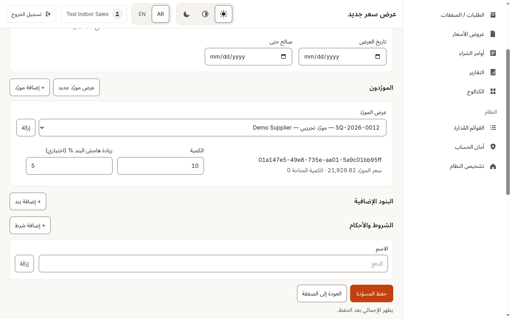
3. دوس إضافة مورّد واختار عرض المورّد (SQ) من القائمة. هتظهر بنوده تحت.
⚠ لو حصل كده
مفيش عرض؟ دوس عرض مورّد جديد وسجّله من هنا.
لو بند المورّد مالوش سعر صالح، الحفظ بيترفض: لا يوجد سعر قابل للاستخدام لبند المورّد هذا — البند محذوف، أو عرض المورّد بلا عملة — لذا لا يمكن حفظ عرض السعر.
سمارت تكنولوجي — نظام إدارة العملاء · دليل المبيعات21
6
عرض السعر (QT)
خطوة 4 من 8
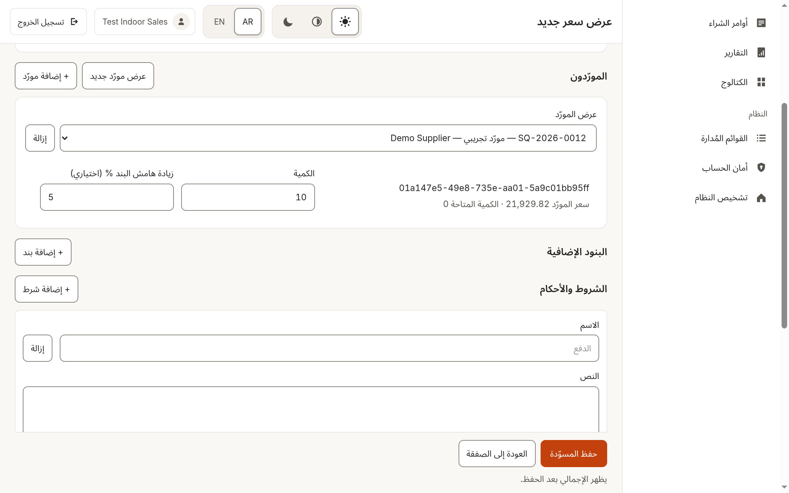
4. لكل بند اكتب الكمية. ولو عايز هامش زيادة على بند معيّن اكتبه في الخانة دي؛ بيتجمع على هامش العرض.
سمارت تكنولوجي — نظام إدارة العملاء · دليل المبيعات22
6
عرض السعر (QT)
خطوة 5 من 8
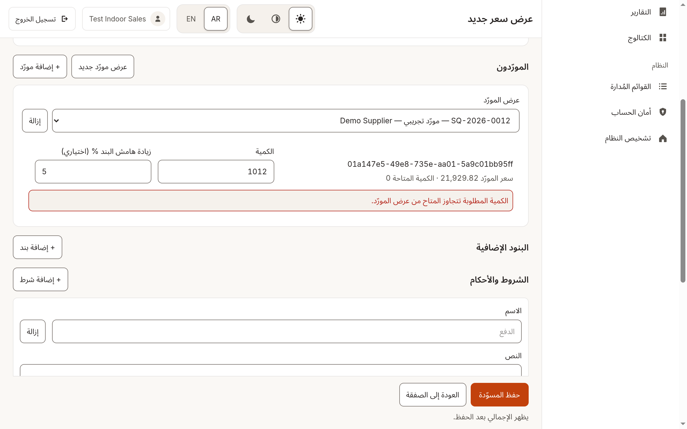
5. دوس حفظ المسوّدة. لو الكمية أكبر من المتاح عند المورّد هيظهرلك تنبيه أحمر تحت البند. ده تنبيه بس: العرض اتحفظ.
⚠ لو حصل كده
التنبيه: الكمية المطلوبة تتجاوز المتاح من عرض المورّد.
لو سعر المورّد اتغيّر بعد ما عملت العرض: تغيّر سعر المورّد — راجع التسعير.
سمارت تكنولوجي — نظام إدارة العملاء · دليل المبيعات23
6
عرض السعر (QT)
خطوة 6 من 8
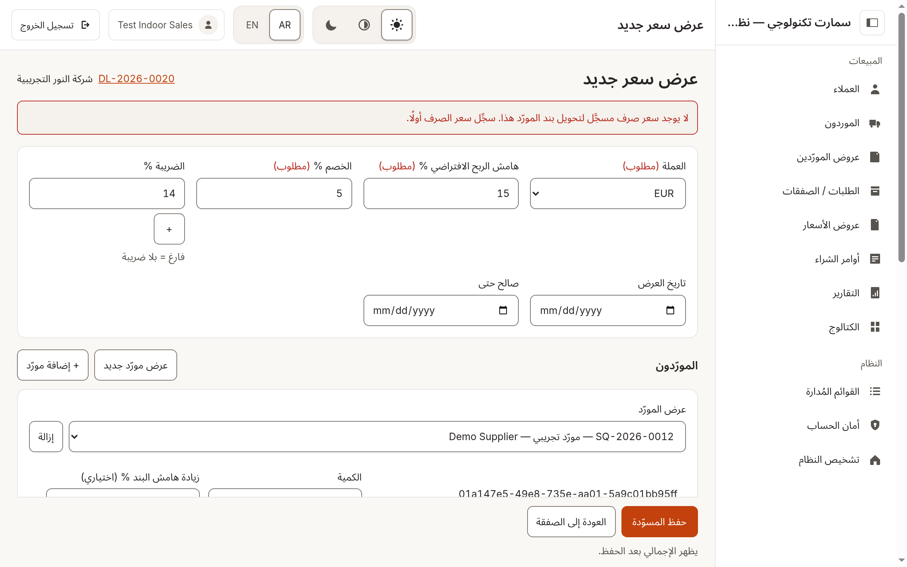
6. لو اخترت عملة مالهاش سعر صرف مسجّل من عملة المورّد، الحفظ بيترفض والرسالة دي بتظهر فوق.
⚠ لو حصل كده
الرسالة: لا يوجد سعر صرف مسجَّل لتحويل بند المورّد هذا. سجِّل سعر الصرف أولًا. — كلّم المدير يسجّل السعر، أو اختار عملة تانية.
سمارت تكنولوجي — نظام إدارة العملاء · دليل المبيعات24
6
عرض السعر (QT)
خطوة 7 من 8
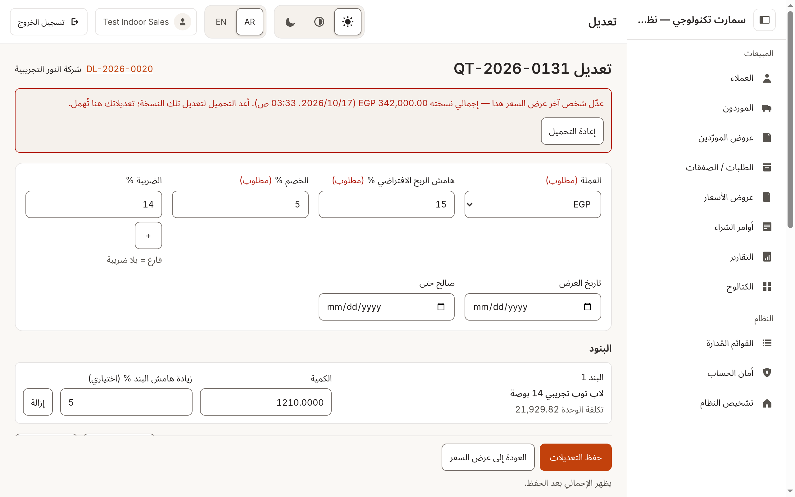
7. لو حد تاني عدّل نفس العرض وإنت فاتحه، حفظك هيترفض وهيظهرلك المربع ده. دوس إعادة التحميل وعيد تعديلك على النسخة الجديدة.
⚠ لو حصل كده
أول الرسالة: عدّل شخص آخر عرض السعر هذا — تعديلاتك اللي ماتحفظتش بتضيع، فاكتبها تاني.
سمارت تكنولوجي — نظام إدارة العملاء · دليل المبيعات25
6
عرض السعر (QT)
خطوة 8 من 8
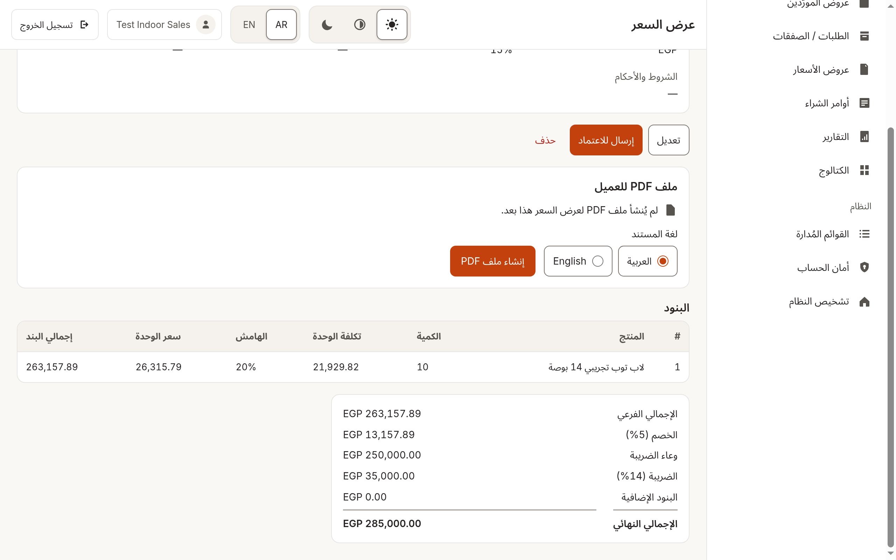
8. بعد الحفظ افتح العرض: الإجماليات كلها محسوبة من السيستم (المجموع، الخصم، وعاء الضريبة، الضريبة، الإجمالي).
⚠ لو حصل كده
البنود الإضافية (توصيل، تركيب) مابتتحسبش عليها ضريبة.
سمارت تكنولوجي — نظام إدارة العملاء · دليل المبيعات26
7
الاعتماد والإرسال للعميل
خطوة 1 من 4
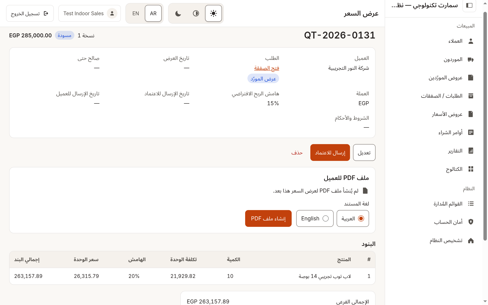
1. العرض لسه مسودة. دوس إرسال للاعتماد.
سمارت تكنولوجي — نظام إدارة العملاء · دليل المبيعات27
7
الاعتماد والإرسال للعميل
خطوة 2 من 4
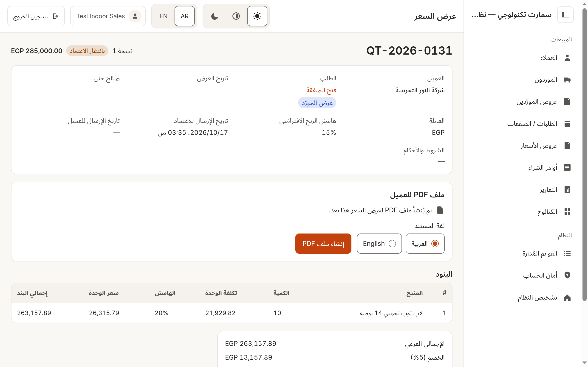
2. الحالة بقت بانتظار الاعتماد. المدير بيعتمده من شاشة الاعتمادات، أو يرجّعهولك بملاحظة تعدّل وتبعت تاني.
سمارت تكنولوجي — نظام إدارة العملاء · دليل المبيعات28
7
الاعتماد والإرسال للعميل
خطوة 3 من 4
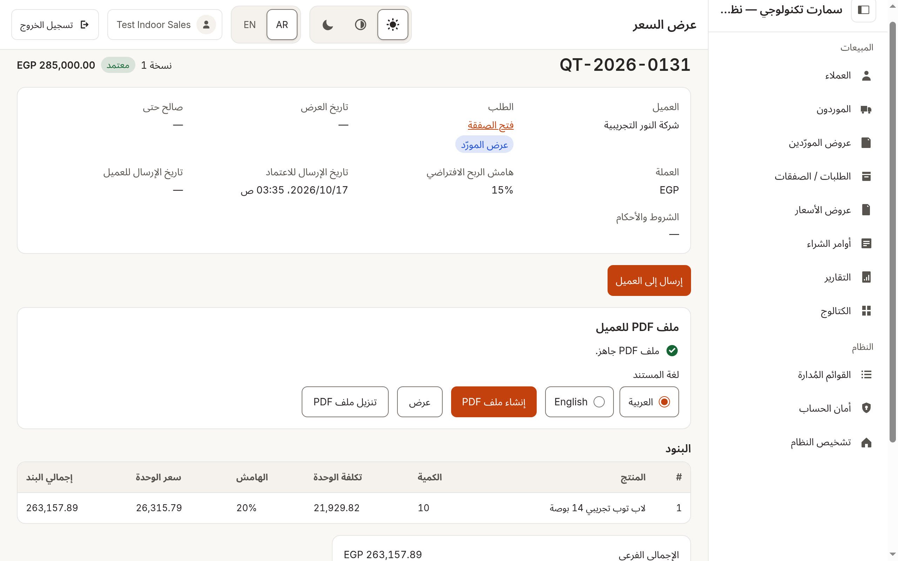
3. بعد الاعتماد هيظهر زرار إرسال إلى العميل. اعمل ملف الـPDF الأول (الدرس ٨) وبعدين دوس عليه.
⚠ لو حصل كده
لو الصفقة لسه ماوصلتش لمرحلة عرض المورّد: لم تبلغ صفقة عرض السعر هذا مرحلة عرض المورّد بعد، فلا يمكن إرسال العرض.
سمارت تكنولوجي — نظام إدارة العملاء · دليل المبيعات29
7
الاعتماد والإرسال للعميل
خطوة 4 من 4
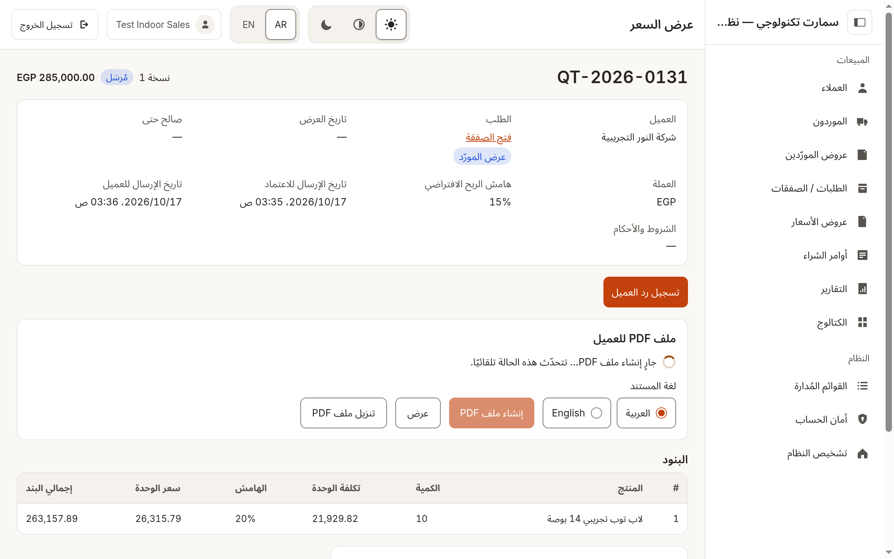
4. الحالة بقت مُرسَل، والصفقة اتنقلت لوحدها. دلوقتي مستني رد العميل.
سمارت تكنولوجي — نظام إدارة العملاء · دليل المبيعات30
8
ملف الـPDF
خطوة 1 من 3
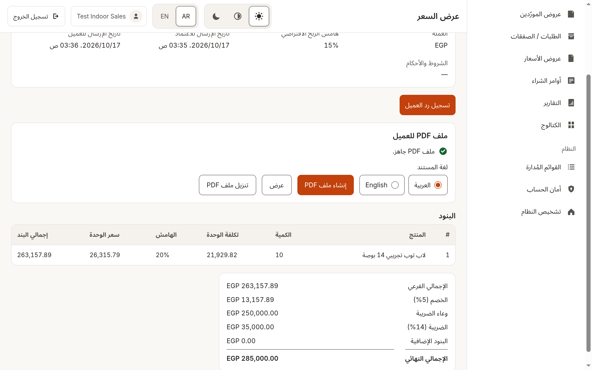
1. في ملف PDF للعميل اختار لغة المستند: العربي أو English، على حسب العميل.
سمارت تكنولوجي — نظام إدارة العملاء · دليل المبيعات31
8
ملف الـPDF
خطوة 2 من 3
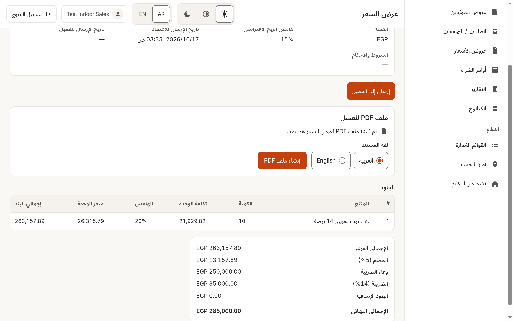
2. دوس إنشاء ملف PDF. الملف بيتعمل في الخلفية، استنى ثواني.
⚠ لو حصل كده
الـPDF عمره ما بيظهر فيه اسم المورّد ولا سعره ولا التكلفة ولا الهامش.
سمارت تكنولوجي — نظام إدارة العملاء · دليل المبيعات32
8
ملف الـPDF
خطوة 3 من 3
3. لما تظهر ملف PDF جاهز. دوس تنزيل ملف PDF أو عرض.
سمارت تكنولوجي — نظام إدارة العملاء · دليل المبيعات33
9
تسجيل رد العميل
خطوة 1 من 7
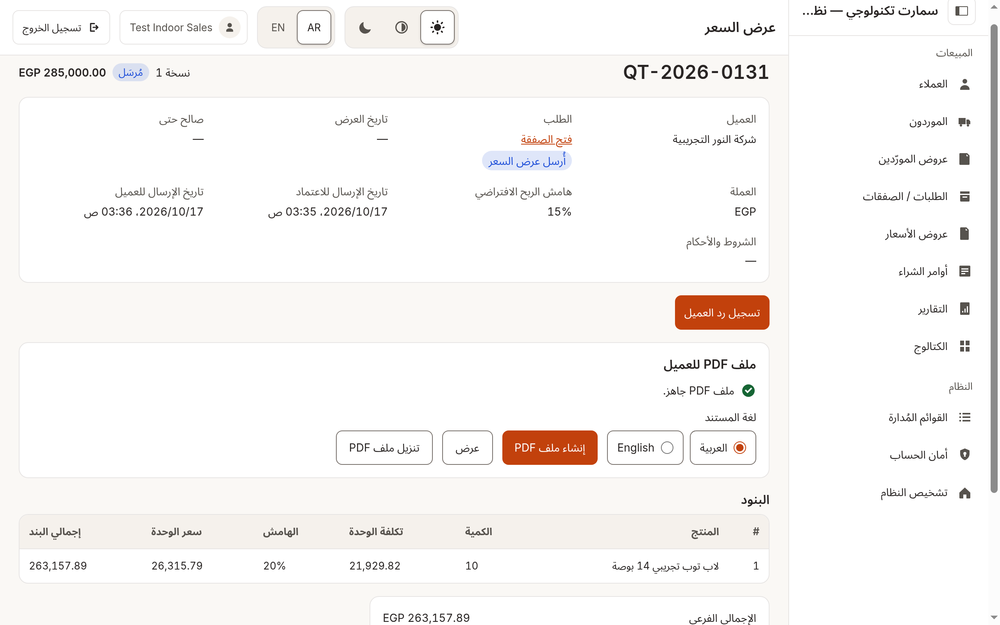
1. على العرض المُرسَل دوس تسجيل رد العميل.
⚠ لو حصل كده
لو العرض منتهي، الاختيار الوحيد اللي هيظهرلك هو «مرفوض».
سمارت تكنولوجي — نظام إدارة العملاء · دليل المبيعات34
9
تسجيل رد العميل
خطوة 2 من 7
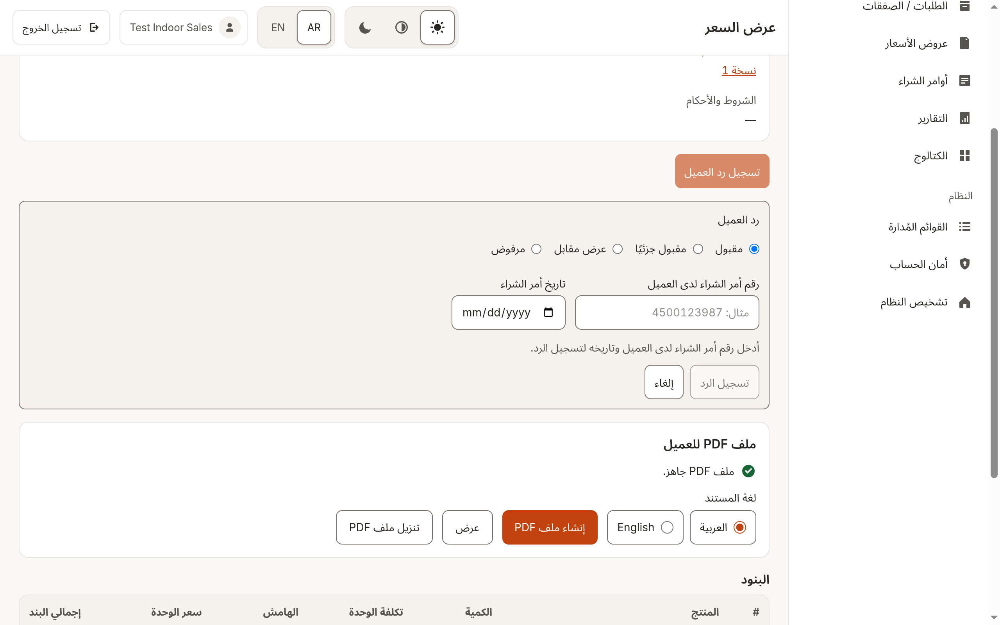
2. العميل وافق؟ اختار مقبول. لازم تكتب رقم أمر الشراء لدى العميل وتاريخ أمر الشراء.
⚠ لو حصل كده
من غيرهم الزرار مقفول: أدخل رقم أمر الشراء لدى العميل وتاريخه لتسجيل الرد.
سمارت تكنولوجي — نظام إدارة العملاء · دليل المبيعات35
9
تسجيل رد العميل
خطوة 3 من 7
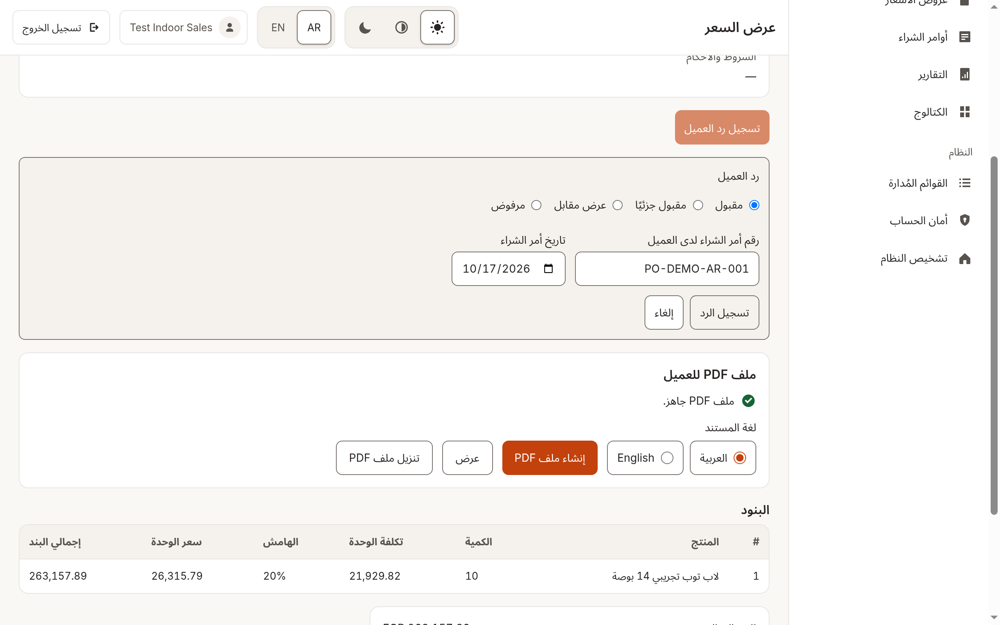
3. دوس تسجيل الرد. السيستم بيعمل أمر شراء (PO) لوحده والصفقة بتبقى ناجحة.
سمارت تكنولوجي — نظام إدارة العملاء · دليل المبيعات36
9
تسجيل رد العميل
خطوة 4 من 7
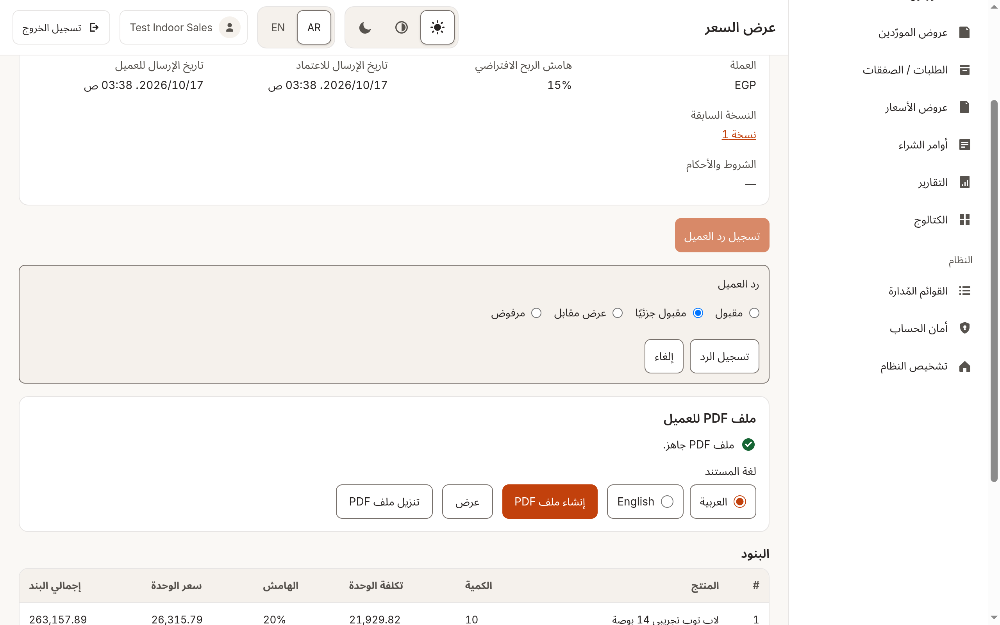
4. وافق على جزء بس؟ اختار مقبول جزئيًا ودوس تسجيل الرد.
سمارت تكنولوجي — نظام إدارة العملاء · دليل المبيعات37
9
تسجيل رد العميل
خطوة 5 من 7
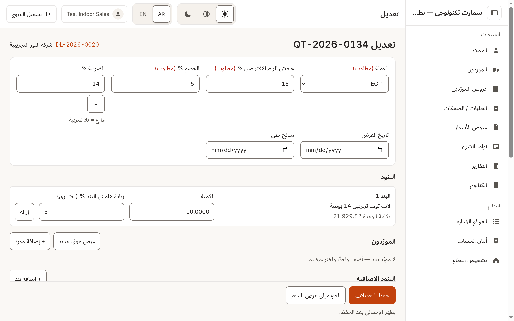
5. السيستم بيعمل نسخة جديدة كاملة من العرض وبيفتحهالك تعدّلها. النسخة القديمة بتفضل محفوظة زي ما هي. عدّل واحفظ وابعت للاعتماد تاني.
سمارت تكنولوجي — نظام إدارة العملاء · دليل المبيعات38
9
تسجيل رد العميل
خطوة 6 من 7
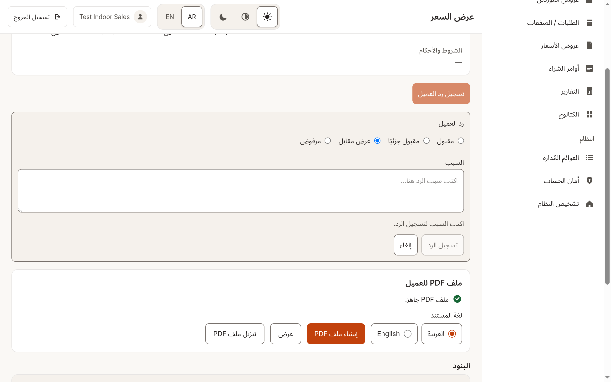
6. عرض مقابل؟ اختار عرض مقابل واكتب السبب. برضه بيعمل نسخة جديدة.
⚠ لو حصل كده
من غير سبب الزرار مقفول: اكتب السبب لتسجيل الرد.
سمارت تكنولوجي — نظام إدارة العملاء · دليل المبيعات39
9
تسجيل رد العميل
خطوة 7 من 7
7. رفض؟ اختار مرفوض واكتب السبب.
⚠ لو حصل كده
السبب إجباري: اكتب السبب لتسجيل الرد.
لو مفيش عروض تانية مفتوحة على الصفقة هتبقى خاسرة: أصبحت الصفقة خاسرة.
سمارت تكنولوجي — نظام إدارة العملاء · دليل المبيعات40
10
تحريك الصفقة بعد الكسب
خطوة 1 من 3
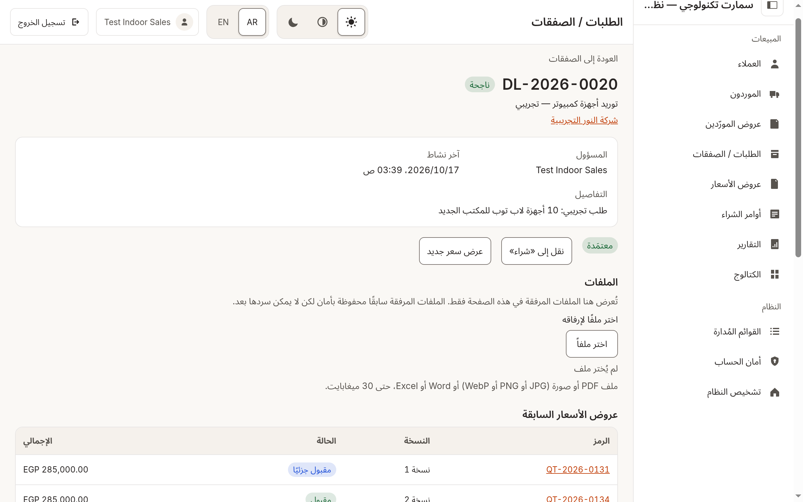
1. بعد ما الصفقة تبقى ناجحة، بإيدك بس تنقلها: شراء ← توريد ← اكتمل التوريد. على صفحة الصفقة دوس على الزرار اللي بيقول الخطوة الجاية.
⚠ لو حصل كده
«اكتمل التوريد» للمبيعات الداخلية بس.
سمارت تكنولوجي — نظام إدارة العملاء · دليل المبيعات41
10
تحريك الصفقة بعد الكسب
خطوة 2 من 3
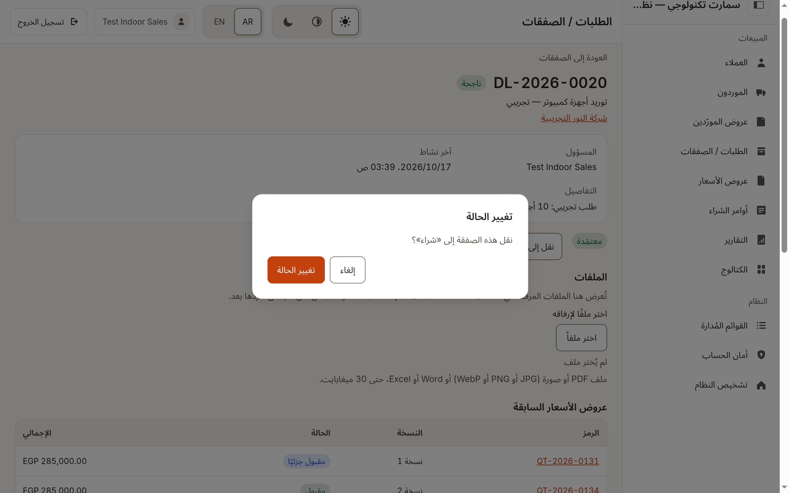
2. هيسألك تأكيد. دوس تغيير الحالة. التغيير ده مالوش رجوع.
سمارت تكنولوجي — نظام إدارة العملاء · دليل المبيعات42
10
تحريك الصفقة بعد الكسب
خطوة 3 من 3
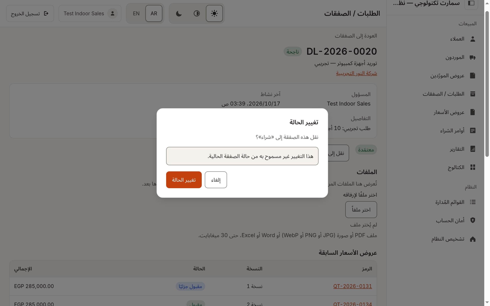
3. لو حد تاني حرّك الصفقة وإنت فاتح الصفحة، التغيير بيترفض. اقفل الرسالة وحدّث الصفحة.
⚠ لو حصل كده
الرسالة: هذا التغيير غير مسموح به من حالة الصفقة الحالية.
سمارت تكنولوجي — نظام إدارة العملاء · دليل المبيعات43
11
أوامر الشراء
خطوة 1 من 1
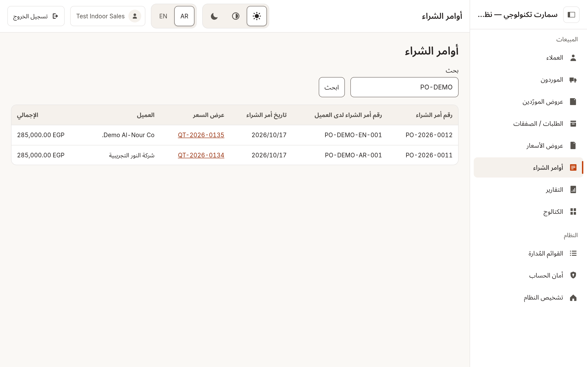
1. من أوامر الشراء اكتب في البحث رقم PO بتاعنا أو رقم أمر الشراء عند العميل، ودوس Enter.
⚠ لو حصل كده
أوامر الشراء بتتعمل لوحدها لما تسجّل «مقبول» — مفيش زرار إضافة هنا.
سمارت تكنولوجي — نظام إدارة العملاء · دليل المبيعات44
12
التقرير اليومي
خطوة 1 من 6
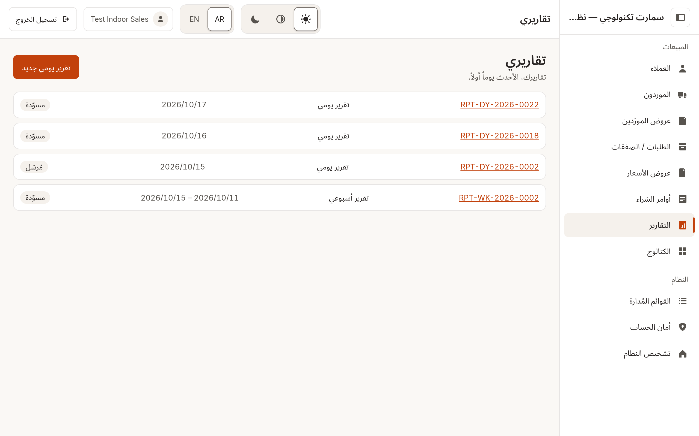
1. من التقارير دوس تقرير يومي جديد. النشاط بتاع اليوم (صفقات، عروض، ردود، أوامر شراء) بيتملي لوحده.
سمارت تكنولوجي — نظام إدارة العملاء · دليل المبيعات45